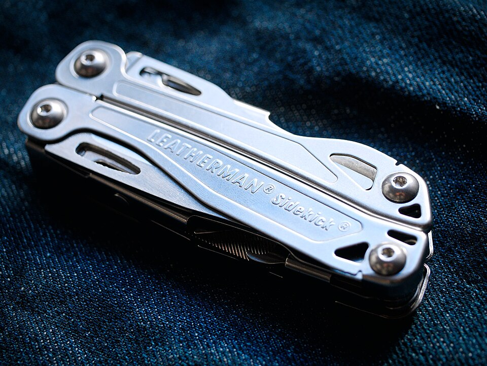
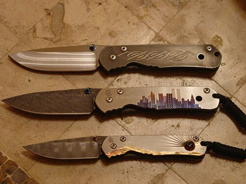
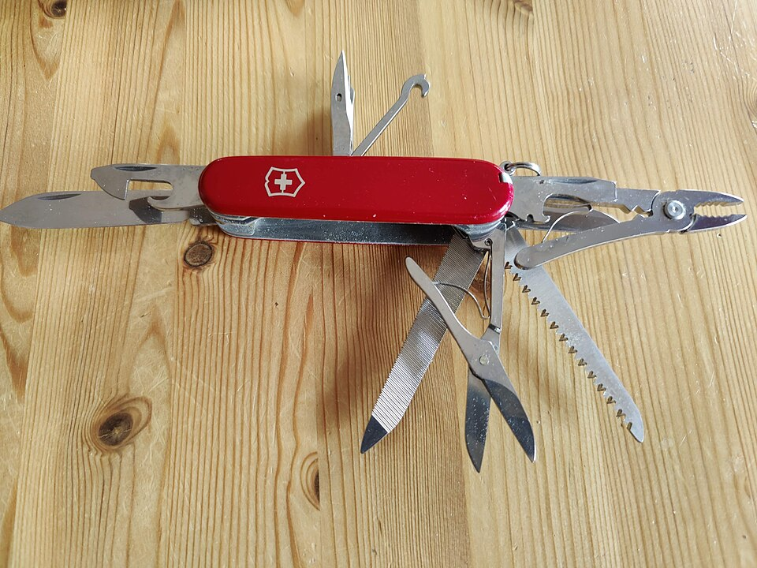
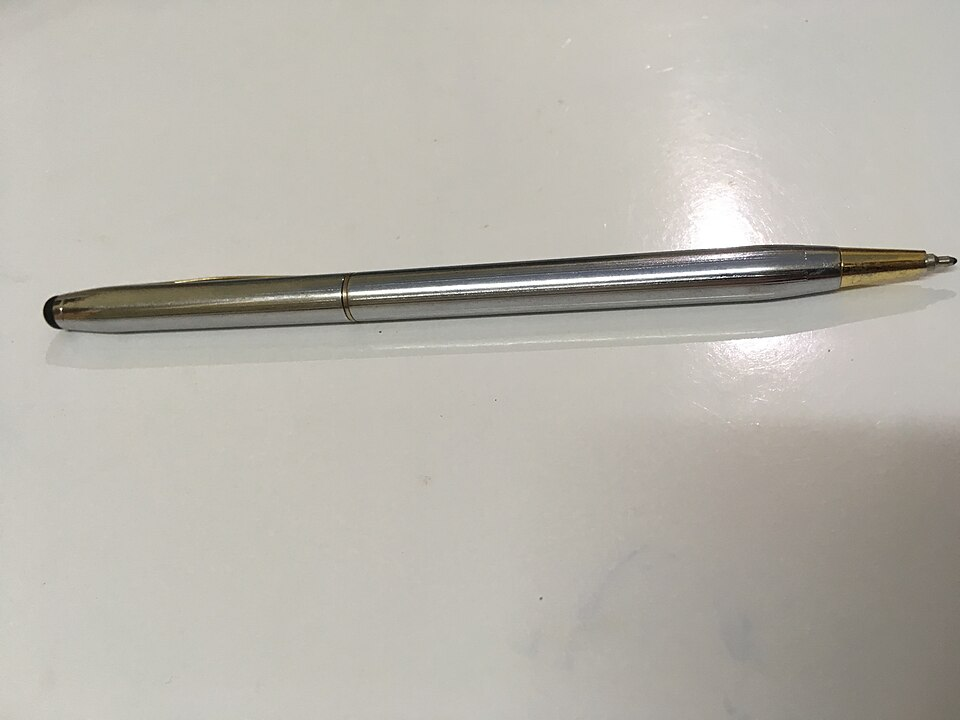
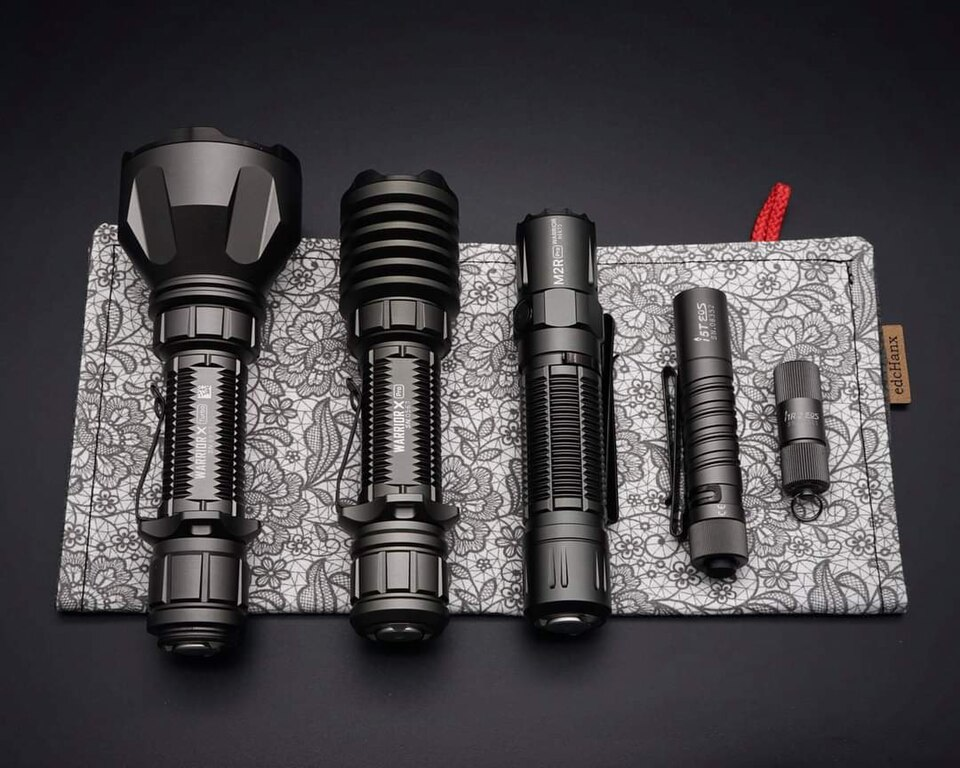
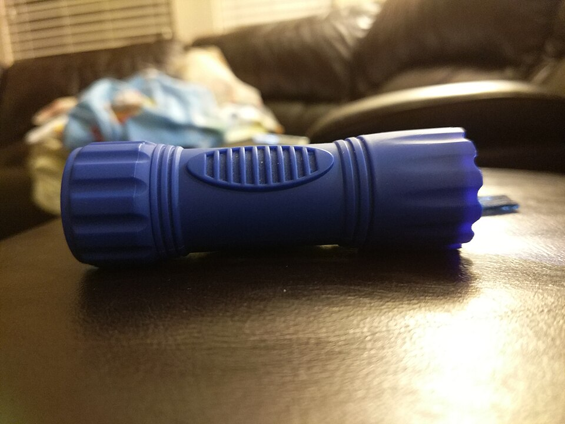
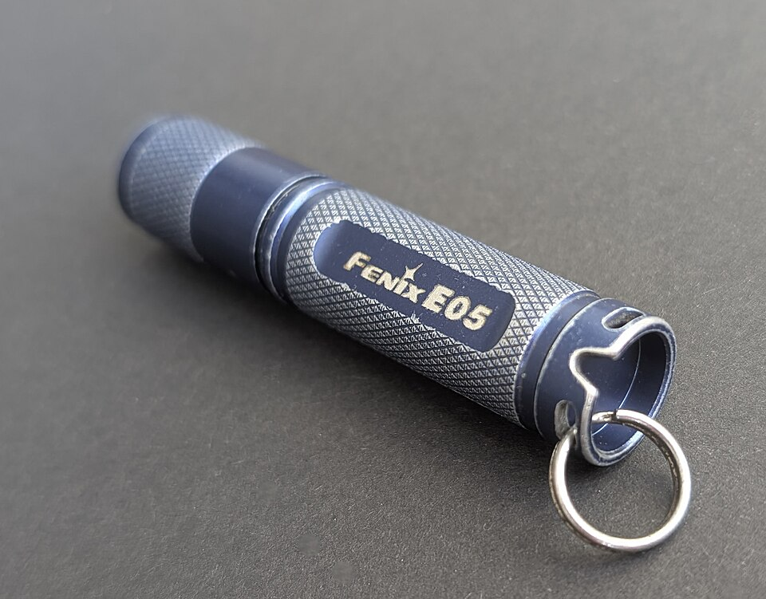
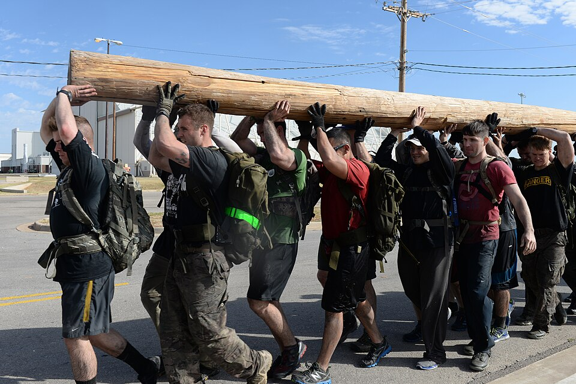
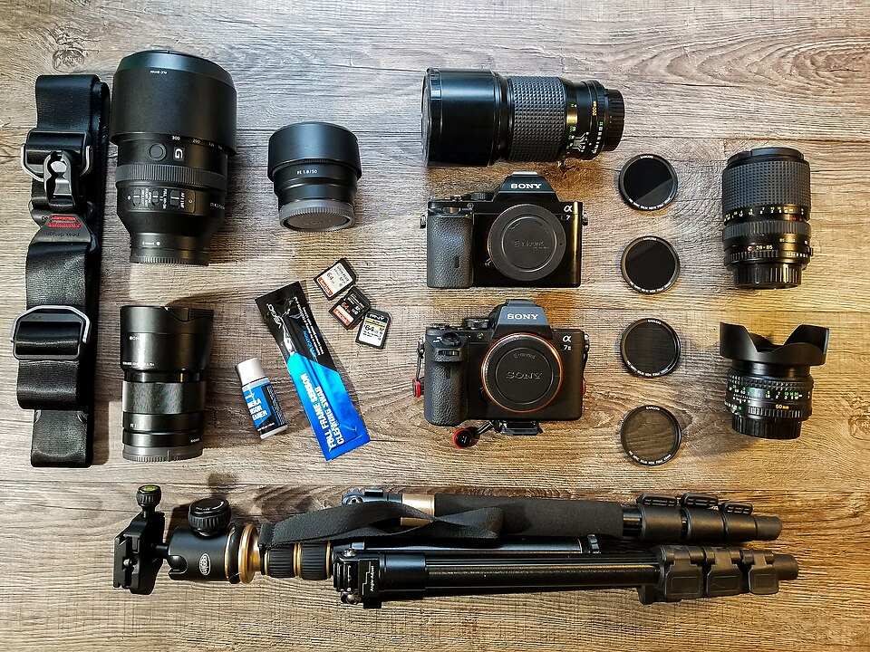
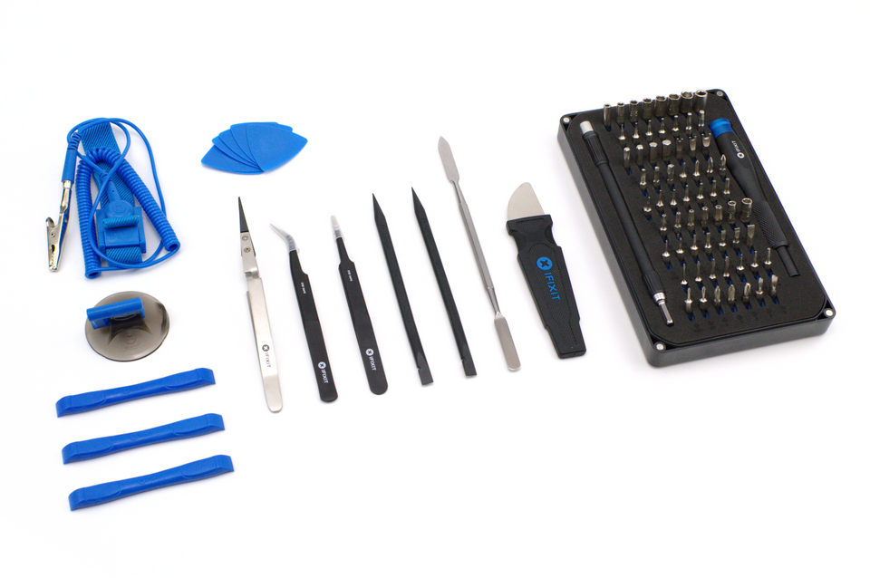

Carry less. Choose well.
A practical collection of durable tools, writing instruments, lights, and organizers built around repairability and everyday usefulness.
Consider local laws, workplace rules, and travel restrictions before carrying a knife or multi-tool. Product versions and materials change.
Multi-tools & pocket tools
Choose the size, tools, service options, and legal fit for your use.

Leatherman
Multi-tools including Wave+ and ARC, with warranty and service information. Photo: Sidekick.
Open resource ↗
Chris Reeve Knives
Precision folding knives including the Sebenza line.
Open resource ↗
Victorinox
Swiss Army knives and compact everyday tools. Photo: Fieldmaster.
Open resource ↗Pens & lights
Look at refill compatibility, battery availability, and practical output.

Tactile Turn
Machined pens and refill information. Photo: illustrative ballpoint, not a Tactile Turn product.
Open resource ↗
Olight
Rechargeable flashlights and everyday lighting.
Open resource ↗
Muyshondt
Machined lights for everyday carry. Photo: illustrative flashlight, not a Muyshondt product.
Open resource ↗
Fenix
Flashlights and headlamps for daily and outdoor use. Photo: E05.
Open resource ↗Bags, organization & repair
Buy for fit, organization, and long-term service rather than marketing claims.

GORUCK
Rugged backpacks including the GR1. Photo: a GORUCK challenge; packs are not identified by model.
Open resource ↗
Peak Design
Tech pouches, bags, and modular organizers. Photo: camera gear including a Peak Design strap.
Open resource ↗
iFixit
Repair guides, parts, and tools for extending the life of electronics.
Open resource ↗Photo credits
Images are resized and may be cropped. Illustrative items are identified on their cards.
- Leatherman: Olgierd, Wikimedia Commons, CC BY 2.0.
- Sebenza: Mike Searson, Wikimedia Commons, public domain.
- Victorinox: Elmschrat, Wikimedia Commons, CC BY-SA 4.0.
- Pen: Shypoetess, Wikimedia Commons, CC BY-SA 4.0.
- Olight: TJ Tang, Wikimedia Commons, CC BY-SA 4.0.
- Illustrative flashlight: Kong of Lasers, Wikimedia Commons, CC BY-SA 4.0.
- Fenix: Siarhei Besarab, Wikimedia Commons, CC BY-SA 4.0.
- GORUCK challenge: U.S. Air Force photo by J. Zuriel Lee, Wikimedia Commons, public domain.
- Camera gear: John Brighenti, Wikimedia Commons, CC BY 2.0.
- iFixit: Gareth Halfacree, Wikimedia Commons, CC BY-SA 2.0.
.jpg){kind=link}


.jpg){kind=link}
.png){kind=link}